|
Table of Contents < - - - return Chapter 28 < - - - next
World War II Story by Robert F. Gallagher Chapter 27 - Rest and Relaxation If all the year were playing holidays, to sport
would be as tedious as to work. _______________________ Soon after our outfit was assigned to MP duty, I went on what was supposed to be a seven-day furlough (See Fig. 163) to Nice, on the French Riviera, for what the Army called R&R (rest and relaxation). Five of us went together. The other four were from each of the other batteries in our battalion. While we hadn't known each other before this time, we soon found we had a lot in common, and the comradery made for a very pleasant trip. One fellow, Mel Gurgle, was the sergeant major from Headquarters Battery and the aide to the colonel in charge of the 815th Battalion. The other three were named Joe, Bill and Russell. We soon learned Mel was a master at making wheels turn. Soon after our arrival in Paris, where we were to transfer for the train ride to Nice, he announced he had a book of blank passes to be filled out as necessary for the purpose of extending our stay. 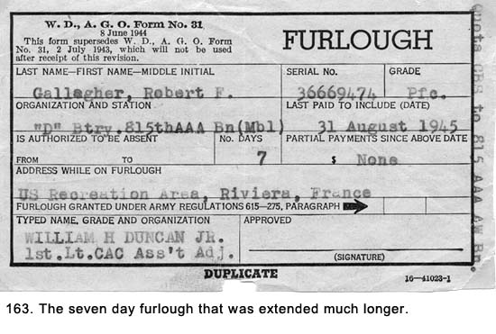 Extending Our Stay In Paris Instead of catching the train immediately as we were supposed to do, we stayed in Paris for over a week enjoying the sights. We had to find a civilian hotel because our new passes did not cover the Army's living facilities for visiting GIs. Upon our arrival, we left the Gare du Nord railroad station carrying our baggage. A few blocks from the station, we turned down a narrow side street with the buildings built right up against the sidewalks. We wanted to stay away from large civilian hotels where there would be other GIs along with inquiring MPs. There was a heavy presence of MPs looking for AWOL soldiers and deserters, most of whom were living in Paris while dealing in the black market to survive. At the end of the first block we found a civilian hotel no bigger than a Chicago three-flat. The owner and his wife spoke no English, and the only French words we knew had to do with the romancing of young ladies. Usually, we could get our message across through gestures to someone who spoke a foreign language, but we were getting no place with this couple. We had pulled out some of the special French francs issued by the Army, but the couple just kept shaking their heads no, in unison. Then, Mel reached into one of the bags of cigarettes we were carrying to sell on the black market and pulled out a carton of Lucky Strikes. It was almost comical to see the turn of events: we now became the ones who had to be convinced the deal we were about to make was satisfactory. All of us had pooled our cartons of cigarettes and we had two good-sized bags of them (See Fig.164). We haggled a little with the proprietor and finally agreed on the number of cartons we would pay. We registered and were shown to our rooms by his wife, who had changed from someone who could only say no to a new person full of smiles and a positive nodding head. 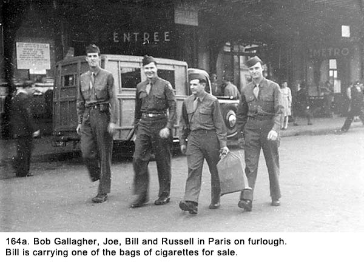
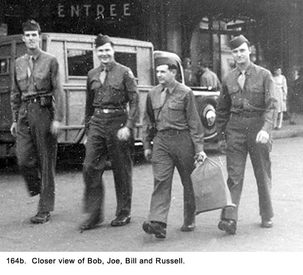 The rooms were tiny and sparse with a common
bathroom at the end of the hall. The toilet in the latrine consisted of a
hole in the floor with a permanent outline of a footprint on each side to
indicate where to stand. There was a bucket of water in the corner of the
room to use as a flush. It was only a small improvement over the slit
trenches we used at gun positions. This was the French version of plumbing,
and we later found it to be quite common throughout the old part of the
city. There were no showers, so we were restricted to the pitcher of water
and basin on the dresser. Our experience with bathing out of a steel helmet
for many months during the war had well prepared us for this primitive
living. The view from our bedroom looked out on the narrow street leading to
our hotel (See Fig. 165). The narrow street was dark even during a day with
full sunlight. The view left a lot to be desired but it didn't matter
because we were never there except to sleep. Overall, the accommodations
weren't much, but they sufficed for our purpose.
We had plenty of cigarettes left so three of us went back to the railroad station the next morning where, upon our arrival, we easily recognized civilians who wanted to buy anything made in America. We sold them for thirty dollars per carton, pooled the money, and made Joe the banker for the rest of the trip. The two men we sold them to were about our age and spoke perfect English, complete with southern accents. We were sure they were American Army deserters. They insisted we move out of the station and into a nearby alley to make the transactions, even trying to push us there. We resisted and made the deal in the middle of the busy rail station. We would rather have been caught selling the cigarettes than risk getting stuck with a knife and losing everything, perhaps including our lives. Before leaving Antwerp, other soldiers who had been to Paris warned us about these deserters. They were tough, dangerous, and in most cases desperate as well. In Paris, we ate at Army mess facilities, which also weren't covered with our new passes. Mel went out alone soon after we arrived at the hotel and found an Army installation about two blocks from our hotel. I don't know if he bribed the mess sergeant in charge or what, but the facilities opened up to us with no questions asked. Not only did we eat free, we did not even have to stand in line with the other GIs. We went right to the front of the line for every meal. It would be one of many times Mel made arrangements for all of us, and there seemed to be nothing that he couldn't do. We were not allowed to go into French restaurants because there was still a shortage of food in Paris, but we could sit and sip wine at outdoor cafes near our hotel away from the main part of the city. Unlike most of the other big cities in Europe, Paris was in great shape because it was an open city during the war. There was no damage from bombs or artillery shells. The only damage we saw were some pockmarks on buildings from rifle or machine gun fire. The French resistance fighters had attacked the German occupation forces with small arms fire when the Germans were leaving the city with the Allied armies advancing on it. Other than the American Army vehicles, mainly Jeeps, there were few motorized vehicles moving around Paris because there was almost no gas available for civilian use. Horses and wagons were used to transfer most materials (See Fig. 166) while the local citizens were, primarily, using the Metro (subway) system to get around. We learned the system in a short time and used it extensively. 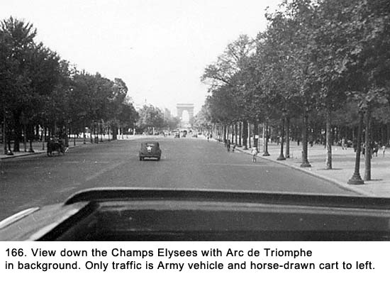 We saw all the sights of Paris - some of them three or four times (see Figs 167 and 168).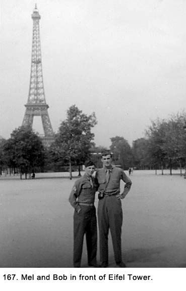 None of my traveling companions were Catholic, so when Sunday came, I took the Metro by myself to Notre Dame Cathedral to go to mass. When I got up out of the Metro, the church was nowhere in sight. I stopped several people on the street to ask where it was. They looked at me like I was from another planet. What's the matter with these people, I thought? Haven't they even heard of this edifice? Finally, I realized I was saying the name like we did the university in South Bend, Indiana. It wasn't even close enough for the Frenchmen to understand me. When I walked around the corner, the church was directly ahead. There was nothing going on when I arrived, so I walked through the church, looking at all the sights. The next mass was not going to start for another hour, so I went across the street to a barbershop to get my haircut. It was a French shop, and after the barber cut my hair, he put some hair lotion on my head, and I smelled like I had taken a bath in lavender cologne. During mass, people were turning around and looking to see where the smell was coming from. I couldn't wait to get back to the hotel and wash my hair. In the evenings, we found places to go for
amusement. This eventually led us up to the Montmarte section of the city,
which was on a hilltop. We glanced at the church, Sacre Coeur Basilica, and
immediately headed for the theater that was showing Les Folies Bergere. It
was the number one item on the must-see list from every GI we knew who had
visited Paris before us. The beautiful showgirls who came out undressed from
the waist up and stayed that way throughout the show were obviously the main
attraction. 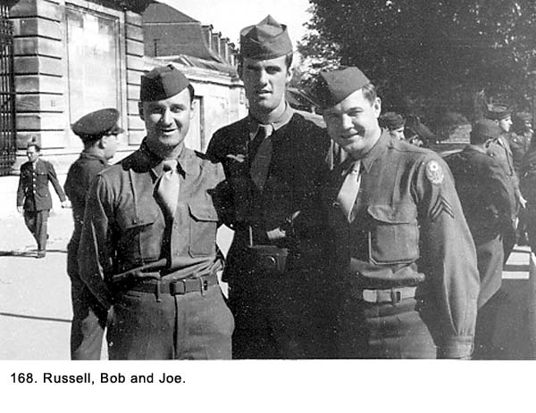 The Seamy Side of Paris One night we took the Metro to the neighborhood called Place Pigale, which had a very seamy reputation because of its low class bars and their unsavory patrons. It was the red-light district of Paris, and after seeing it we all concluded it had been properly nicknamed Pig Alley. We walked along the street and saw all the sights. There were street hawkers selling trinkets that could easily be defined as junk. Women of varying ages who all had one common denominator-they looked hard and tough-moved through the mix of GIs and civilian men. Many of the shop windows were decorated with obscene pictures. Doormen in front of some bars offered promises of exotic behavior within and those who were not involved in selling sex were yelling at the GIs, "Cigarettes? Cigarettes?" We would not go into any of the cafes, as the French called them, because they looked so sordid. Some of the places had live shows that were touted as many things, but they really came down to strip joints. One of our group commented they looked like the place where they shot those training films on the evils of social diseases we had seen in the States. Despite one of the biggest stereotypes about GIs, we were not all heavy drinkers, womanizers and hell raisers when released on passes or furloughs into the civilian population. I don't know how typical or atypical the five of us were, but our conduct on this trip showed little tendency toward either extreme of being wild or subdued. While we all enjoyed drinking beer and flirting with any young girl we saw, the line was drawn on rowdy behavior. We represented five different batteries, a wide range of ages, a mixture of marital statuses, and a good blend of different personalities. While we continued to swear, the frequency and grossness were greatly reduced and we were acting a lot more like gentlemen than carousing military men. I had noticed this improvement in behavior when our outfit arrived in Antwerp. It might have been the return to an urban area where we began to mingle with more civilized people, or maybe we no longer had to prove something by our coarseness. This is not to infer all GIs were cleaning up their acts, because the action along the street we were on shouted otherwise. On our way back to the Metro, we came across a large building in the Pigale District that the American Government had set up as a nightclub to entertain GIs. There were four of these nightclubs in Paris, set up primarily to prevent price gouging. They had a dual advantage of keeping the GIs out of the sleazy places we had just seen. Somebody who knew how some GIs thought and behaved was really thinking straight. We paid a dollar each to get in and found it to be packed with hundreds of people. It was a huge place with a stage at one end and tables set up around a large dance floor. There was a balcony around three sides that was so crowded we wondered what kept it from falling down under the weight. Most of those present were GIs and about a quarter were their civilian dates or WACs (Women's Army Corps: American women soldiers). Almost everyone was drinking champagne, which was the big seller. Some tables had a dozen or more bottles on them. The GIs would not let the waitresses remove empty bottles because contests were developing between tables to see which one could drink the greatest number. We ordered a couple of bottles that cost four dollars each. Everyone was drinking heavily, and the place was extremely noisy with loud conversation, laughter, and shouting. Almost everyone was smoking, and a heavy haze hung in the air. A stage show came on, and it lasted more than an hour and a half. It was top-notch entertainment, and the audience loved it. Typical of European theatrical shows at that time, it included acts with trained animals, tumblers, and jugglers. The hit of the show was a great girl singer who was able to hold the attention of the audience by singing the popular upbeat songs of the day. She sang most of them in English and then repeated the words in French, which made them sound even better. Next on the bill was a small chorus line of dancers. There was nothing indecent about the dancers, but some of the GIs were making off-color comments about them that made other members of the audience howl. The girls continued to smile as they danced as though they were use to this kind of reaction. The noise was so great you could not talk to the person next to you. The five of us had good seats at a round table next to the dance floor where the acts performed, and we got caught up in all the excitement. After the show, the place quieted down somewhat, but everyone was so wound up it was barely noticeable. There was a large round table next to us with six paratroopers and four girls seated at it. The paratroopers had all kinds of ribbons on their uniforms, which indicated they had seen a lot of action during the war. The girls were young, but they looked as hard as nails. Everyone at the table was drunk, really drunk, and we knew it would not take much of a spark to start trouble. Soon after the conclusion of the show, a band started to play and many of the couples in the audience headed for the dance floor. One of the paratroopers at the adjoining table wanted one of the girls in his party to dance with him, but she kept refusing him. She kept repeating, "You're too drunk." They both stood right behind me, and I was listening as they shouted at one another. The paratrooper leaned on his table to steady himself while a cigarette with a one-inch ash dangled from his mouth. He did not look as though he was old enough to smoke, much less be in the Army. After several refusals by the girl, the paratrooper hauled off and hit her smack in the face with the palm of his hand. The blow would have floored most girls, but not this one. She shook off the blow, picked up a champagne bottle, and swung it as his head. Either someone deflected it or she was too drunk to hit her target, and she just grazed his body. He then turned, grabbed her, and threw her out onto the dance floor where she nearly knocked over some of the dancers. Several GIs who had observed what had happened came to the aid of the damsel in distress, even though it was a great stretch of the imagination to call her a damsel. This might have been a gallant thing to do, but it was also the wrong thing because in just a minute, a fight had begun. It mushroomed into half a dozen fights and soon, people were throwing punches at everyone within reach for no obvious reason. One of the paratroopers yelled "Geronimo!" the paratroopers' battle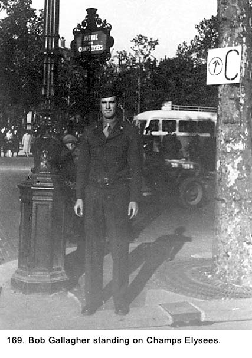 cry. The place must have been filled with them because they started to come from all directions, some of them swinging down onto the dance floor from the balcony. Everyone was headed for the melee, and the place was in pandemonium. We were at the epicenter of the fight, and it was hard to stay out of it because we were being pounded with blows from people we had never seen before. The paratrooper who had started the fight was standing up on his table dropkicking empty champagne bottles into the crowd. The four MPs near the front door stepped in to stop the action, but they were too outnumbered to make any difference. The five of us finally locked arms, made our way to a side exit with a lot of pushing, and got out of there in a hurry. With our fictitious passes, we did not want to get picked up in a riot. As we left the area, we saw several Jeeps and a truckload of MPs headed for the club. That was our one and only trip to Pigale. We kidded each other the rest of our trip about who had the idea to go there in the first place. While in Paris, I bought Caron perfume for my mother and sister, Joan. The city was exciting because there was so much to see and do. We took many pictures (See Fig. 169). Between seeing the historical sights and participating in the active nightlife, we kept very busy. Nice Was Nice Finally we took a train to Nice. When we
arrived, everyone from the train was going to the same hotel as we were, so
when we reached the front door, we found a line extending down the street
for a block. Everyone was queued up to register. Mel left us and headed to
the hotel entrance. A few minutes later, he was waving for the four of us to
come and join him. To a lot of catcalls from the GIs in line, we went in and
right up to our rooms. We were at the Rual Hotel (See Figs. 170a and 170b), which was
being managed by the American Government. It was right on the Mediterranean
Sea and our rooms overlooked the water. It was an old majestic hotel with
ornate furnishings and decorations. The main lobby looked like something out
of an elaborate castle we had seen in London. 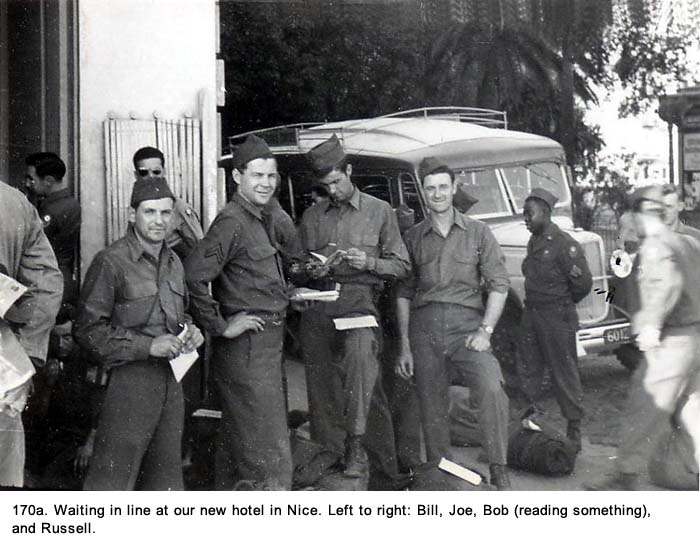 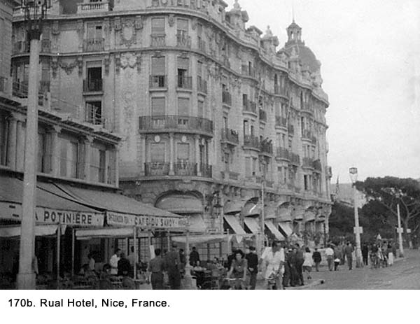 In addition to having nice accommodations, there were many things arranged for us to do. There were bus trips to a perfume factory in Cannes and to a winery near Grasse. A boat trip down the coast past the northern coast of Italy was a big hit. We walked down the boardwalk in front of the hotel and watched the girls sunbathing on the beach. (See Fig. 170c) 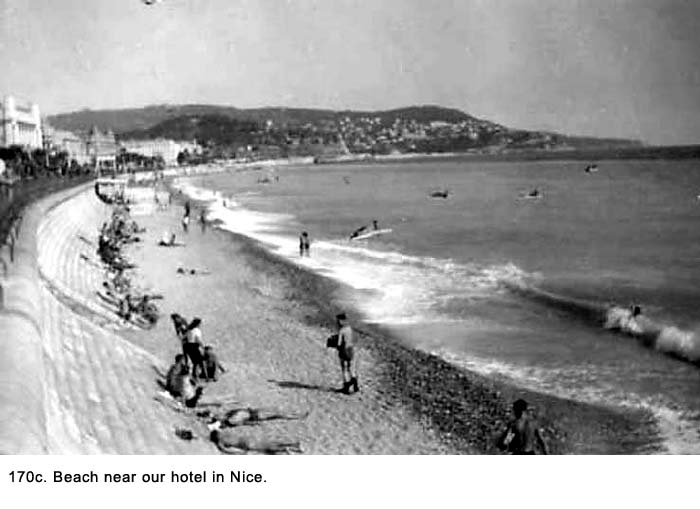 There were signs posted around the hotel that read, "No saluting
required." (See Fig. 171a) The area known as Old Nice was interesting
with its narrow cobblestone streets (See Fig. 171b) and cemeteries with the graves above
ground. We marveled at the town cistern (See Fig. 171c), located in the middle of a busy
square, where mothers were washing their clothing and giving their children
baths out in the open. 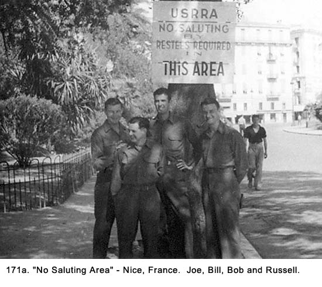 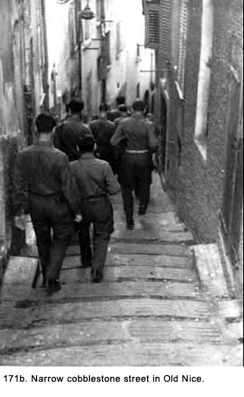 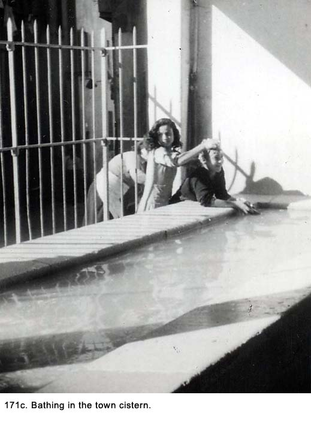 We ate our meals, served by uniformed waiters, in a very elegant dining room in the hotel. The tables had white tablecloths, expensive china, and ornate silverware. This was quite a change from the Army facilities, and it took several days to get accustomed to it. A stringed combo played chamber music during lunch and dinner. Mel would take a small amount of our pooled money and tip the combo members to play our favorite tunes. He kept selecting Debussy's Claire de Lune until we all got sick of it. None of the rest of us had heard it played before getting to Nice. The border between France and Monte Carlo was only a few blocks from our hotel but Monte Carlo was off-limits to us. However, we did take a ride on a motor launch and sailed along the shoreline of this beautiful but minute country (See Fig. 171d). 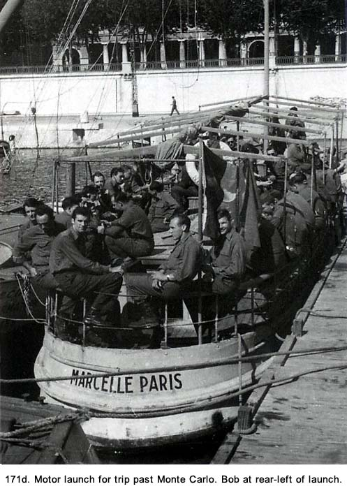 GI nightclubs were set up around the area of our hotel for the troops to enjoy and the movie theaters had all the latest releases from Hollywood. A Red Cross Club, where they had dances and served food, was located just a few doors down from our hotel, also facing the water. We went there occasionally, but we preferred some of the other clubs that were more exciting. It was all a lot of fun, and it was hard to leave when our stay was up. On the way back to Antwerp, we stopped for another look at Paris. Then we went on to Brussels for several days. We had planned to stay longer but, after Paris, Brussels seemed a little boring and we kept our visit short. Like all tourists who visit that city, we marveled at the fact they would erect a statue of a boy relieving himself and consider it to be one of their national treasurers, regardless of its symbolism. All together, I believe we were gone for over three weeks. I was quite apprehensive about getting back to our unit in Antwerp, even though Mel kept assuring us nothing would happen. I had never been even a minute late from a pass of furlough. As it turned out, my worry was for nothing. I arrived, checked in, and signed up for MP duty. No one said a word about the extended trip. Our unit was starting to break up. Many of the senior noncoms and officers had already been shipped home for discharges. They had the longest amount of service and, therefore, the most number of points. It was no problem operating without them because by this time, we all knew what was expected of us, and we did it. Shortly after arriving back from my furlough, we heard Captain McKee was being rotated home. The rumor was there was going to be a big ceremony to honor him for his leadership of the 815th Battalion, Battery D. It was true we had seen little of him since we arrived in Antwerp, when he directed our truck and nine others, in perfect military unison, into a peat bog. We had not had a single battery formation since we had been in the Antwerp area, so it was impossible for him to give us one of his famous inspirational speeches about military discipline. We were disappointed when we heard he left without any fanfare because the plan was to have the biggest sick call the battery had ever seen on the day of the ceremony. A new captain from some other outfit was assigned to us. He was the most laid-back officer we had ever met-the complete opposite of McKee. We lamented about what might have been if we had only had him to start with. We heard stories about him speeding through the downtown area of Antwerp in his Jeep after spending an evening drinking at the officers club. Several of our MPs out on patrol and in their own Jeeps stopped him and drove him back to his quarters. With the war over and our duties guarding prisoners behind us, we had expected to spend our remaining time in the service in peaceful pursuits. It would not turn out that way, as we experienced some very exciting times during our MP duties. Chapter 28 < - - - next Table of Contents < - - - return _________________________ Footnotes and Source of Photographs. Copyright, Robert F. Gallagher, 1999 - 2015, all rights reserved on all images and content.
|